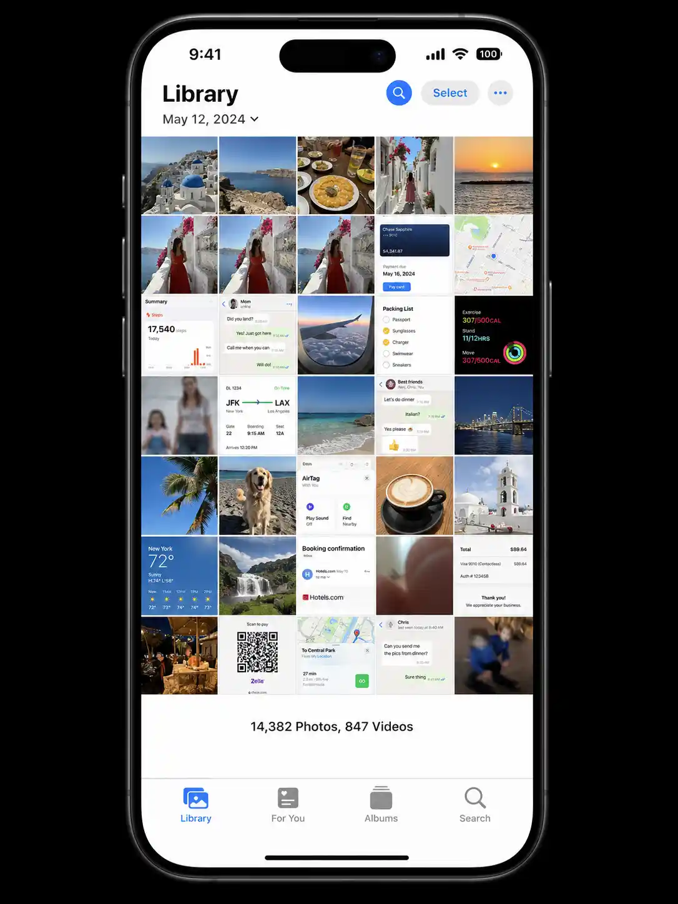
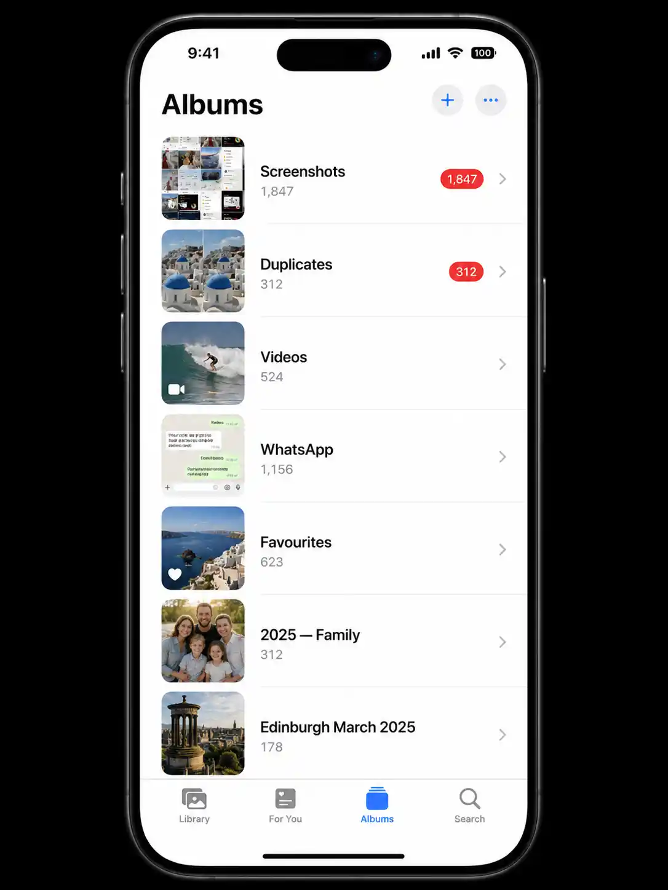

Why your Camera Roll grows out of control
If your whole device — not just Photos — feels full, see our guide on what to delete first when phone storage is full. The average iPhone user gains roughly 2,000–4,000 photos per year — and that number is accelerating. Modern iPhones capture Live Photos (each one stored as both a photo and a video), burst mode fires 10 shots in a single second, and every app that touches media leaves copies behind. WhatsApp saves every received image automatically. Screenshots pile up from articles you meant to read, QR codes you scanned once, and delivery confirmations you'll never need again.
The result isn't just a storage problem — it's a searchability problem. When you want to find a specific photo from a holiday two years ago, you're scrolling past thousands of screenshots, duplicates, and blurry test shots to find it. The clean-up process below changes that permanently.
Open the Photos app, tap Library, scroll to the very bottom. You'll see your total photo and video count. If it's above 5,000, screenshots and duplicates are almost certainly a major contributor. Above 10,000 and large videos are likely adding significant storage too. You can cross-check this against Settings → General → iPhone Storage (Apple's storage guide) to see exactly how much space Photos is using.

A typical over-full Camera Roll — a mix of memories, screenshots, duplicates, and WhatsApp auto-saves. The methods below clear all four categories systematically.
Step 1 — Delete screenshots (the fastest win)
Screenshots are almost never memories. They're instructions you followed, QR codes you scanned, memes you saved, receipts you photographed, and articles you meant to read. On a typical iPhone, screenshots account for 500 MB to 3 GB of storage — and can be deleted en masse without a second thought.
-
1
Open Photos → Albums → Screenshots
iOS automatically sorts screenshots into their own album. Tap it to see everything at once.
-
2
Tap Select → tap the first screenshot → swipe down
Tap Select in the top-right, then tap the first screenshot and drag your finger down the grid to select all. For very large albums, you can also tap Select All if it appears.
-
3
Scan quickly for anything worth keeping
Scroll through the selected items. If you spot something to keep, tap it to deselect. Most screenshots are safe to delete in bulk.
-
4
Tap the bin icon → Delete [X] Photos
Deleted screenshots go to Recently Deleted for 30 days, so nothing is permanently gone immediately.
The two biggest sources of unwanted screenshots are articles saved for later (use Safari Reading List instead: tap Share → Add to Reading List) and QR codes (iOS now lets you scan QR codes directly from the camera without capturing a screenshot). Breaking these two habits alone halves the screenshot pile-up rate.
Step 2 — Merge duplicates with the iOS Duplicates album
If your iPhone runs iOS 16 or later, Apple's built-in Duplicates feature does the hard work for you. It scans your entire library, groups identical and near-identical photos together, and lets you merge each group in a single tap — keeping the highest-quality version and discarding the rest, while preserving any edits or metadata. For a deeper walkthrough (including third-party options for older iOS versions), see our full guide to deleting duplicate photos on iPhone.
-
1
Go to Photos → Albums → Duplicates
This album appears under Utilities near the bottom of the Albums list. If you don't see it, iOS is still scanning — plug in and leave the Photos app open for a few minutes.
-
2
Tap Merge next to each group — or merge all at once
To clear everything in one go: tap Select (top-right) → Select All → Merge. iOS handles the rest automatically.
-
3
Empty Recently Deleted to reclaim the space
Go to Albums → Recently Deleted → tap Select → Delete All to immediately free up the storage.
The built-in Duplicates album isn't available. Your best free alternative is to update to iOS 16+ (strongly recommended for security reasons too). If you can't update, apps like Gemini Photos offer a similar duplicate-detection feature — the first scan is free, but bulk deletion requires a subscription.
Step 3 — Find and delete large videos
A single 4K video recorded at 60 fps takes up roughly 400 MB per minute. A 5-minute clip of your dog playing in the park is 2 GB. Most people have dozens of these — clips they recorded once, watched once, and never reviewed again. The Videos album is the highest-impact category after screenshots and duplicates.
-
1
Go to Photos → Albums → Videos
All videos are collected here, separate from photos.
-
2
Sort by largest first
Tap the filter icon (three lines) → Sort → File Size. The biggest videos surface to the top.
-
3
Review and delete anything you don't need
Watch the first few seconds of each large video. If it's a random clip you recorded without thinking, delete it. Keep only videos that document a real memory — holidays, milestones, events.
Before bulk-deleting, AirDrop or upload any video you're unsure about to iCloud Drive, Google Photos, or your Mac. Once deleted from Recently Deleted, videos are gone permanently. When in doubt, archive first, delete later.
Step 4 — Stop WhatsApp and Instagram from auto-saving
These two apps are responsible for the majority of unexpected Camera Roll growth in most people's libraries. Every photo and video someone sends you in WhatsApp — every group chat meme, every shared screenshot, every forwarded video — saves directly to your Camera Roll unless you turn it off.
- WhatsApp: Settings → Chats → Save to Camera Roll → Off. Then go to Albums → WhatsApp and delete everything that accumulated before you turned it off.
- Instagram: Settings → Original Photos → Off (stops saving posted photos to Camera Roll). Story photos: Settings → Story → Save to Camera Roll → Off.
- Telegram: Settings → Data and Storage → Save to Gallery → Off.
- Snapchat: Settings → Memories → Auto-Save to Camera Roll → Off.

The Albums view gives you targeted access to each clutter category — tackle Screenshots and Duplicates first, then Videos and WhatsApp for the biggest impact.
Step 5 — Organise keepers into albums
Once you've cleared the junk, the goal is to make your Camera Roll a temporary inbox — a place photos land when first taken, not where they live permanently. Creating named albums for your keepers transforms an overwhelming scroll into a browsable library.
A simple album structure that works
- By year: 2024, 2025, 2026 — move photos as you go. Simple and scalable.
- By category: Family, Travel, Food, Work — useful if you photograph similar things often.
- By event: Edinburgh March 2025, Tom's Birthday — good for big occasions you'll want to revisit.
To create an album: Photos → Albums → + (top-left) → New Album. Then select photos from your Camera Roll and add them. This doesn't move or duplicate them — the original stays in your Camera Roll, and the album is just a pointer.
As you scroll your Camera Roll, tap the heart icon on any photo worth keeping. Your Favourites album then becomes a curated highlight reel — and when you're doing future clean-ups, anything not in Favourites is a candidate for deletion. It takes 2 seconds per photo and creates a valuable filter over time.
Step 6 — Archive older photos to iCloud
Once your library is organised, the final step is to stop carrying all of it on your device. The Optimise iPhone Storage setting in iCloud Photos keeps full-resolution originals safely in iCloud and stores smaller previews on your phone — freeing 5–15 GB or more for most people, with no photos lost.
Enable it at: Settings → [Your Name] → iCloud → Photos → Optimise iPhone Storage. The photos remain fully accessible — tapping any thumbnail downloads the full version over Wi-Fi in seconds.
Quick wins — ranked by effort vs. reward
| Action | Time needed | Typical photos removed | Storage saved |
|---|---|---|---|
| Delete all screenshots | 5 min | 100–2,000+ | 500 MB – 3 GB |
| Merge duplicates (iOS Duplicates album) | 5 min | 500–3,000+ | 1 – 6 GB |
| Delete large videos | 10 min | 10–50 videos | 2 – 10 GB |
| Turn off WhatsApp auto-save + delete accumulated | 10 min | 500–5,000+ | 500 MB – 4 GB |
| Enable Optimise iPhone Storage | 2 min | 0 deleted | 5 – 15 GB on-device |
| Create albums + mark Favourites | 20–30 min | 0 deleted | Ongoing clarity |